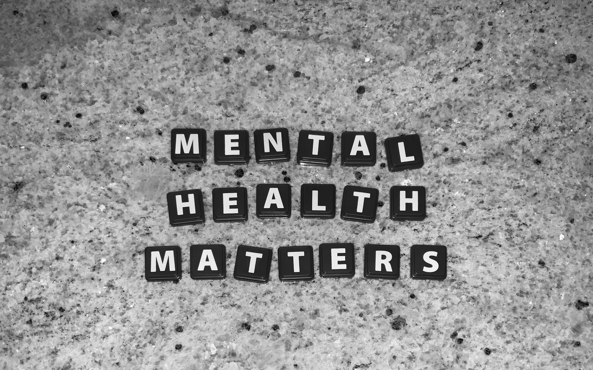

Warning signs
This page isn't meant to be taken as medical advice but should rather be used as a gauge on whether you should seek out treatment or not.
Education in recognizing warning signs of poor mental health is very important because understanding warning signs allows you to recognize symptoms of poor mental health and realize that someone needs help. This then allows said person in need to get the help that they deserve.

Someone struggling with mental health may experience:
- Persistent sadness, hopelessness, or frequent crying
- Anxiety, excessive worrying, or feeling overwhelmed
- Irritability, anger, or frequent mood swings
- Low self-esteem, negative self-talk, or feelings of worthlessness
- Loss of interest in hobbies or activities once enjoyed
- Withdrawing from friends, family, or social activities
- Changes in sleep patterns, appetite, or weight
- Persistent fatigue, low energy, or difficulty relaxing
- Frequent headaches, stomachaches, or unexplained physical issues
- Difficulty concentrating, forgetfulness, or declining academic performance
- Loss of motivation, procrastination, or difficulty completing tasks
- Increased school absences or avoidance of responsibilities
- Increased conflict with family members or peers
- Sensitivity to criticism, rejection, or social pressure
- Negative body image or excessive comparison with others
- Perfectionism, fear of failure, or excessive self-criticism
- Changes in behavior, impulsivity, or increased risk-taking
- Increased use of alcohol, vaping, weed or other substances
- Difficulty managing emotions or coping with everyday stress
- Feelings of loneliness, isolation, or being misunderstood
- Self-harm or thoughts of suicide
Life events/Routine and mental health:
Grief/Loss and Transitions
Oftentimes traumatic life events can create temporary trauma that may look like a mental health disorder. For example, the passing of a loved one could make someone very sad for a week. However, it is important to realize that the length of time not only the severity of the symptoms makes up how good someone's mental health is. A general rule of thumb is that if you experience some of the symptoms listed above for over 2 weeks then it is a good idea to go seek out help.
Always Remember, Transitions, like moving to a new house, or Suffering from grief and loss may look like disorders but if the symptoms go away quickly (less than 2 weeks) then it may not be a disorder
Sexuality/Gender (LGBTQ+)
There is nothing wrong with being LGBTQ+ or identifying as something you weren't born with. However, being LGBTQ+ does put individuals at a higher risk of experiencing mental health disorders. This is due to some members of society harassing and refusing to accept those in the LGBTQ+ community for who they are. If you or someone you know is in the LGBTQ+ community and is struggling with mental health, please go to or refer them to the Trevor Project. Call them at 1+(866)488-7386, Text “START” to 678-678, or access their website at https://www.thetrevorproject.org/get-help/
Hygiene
Those who are struggling with mental health issues will often neglect to take care of themselves. Whether it be no longer brushing their teeth, caring how they look, or eating properly, a lack of hygiene is definitely a sign that something is amiss, and the individual may be struggling with mental health.